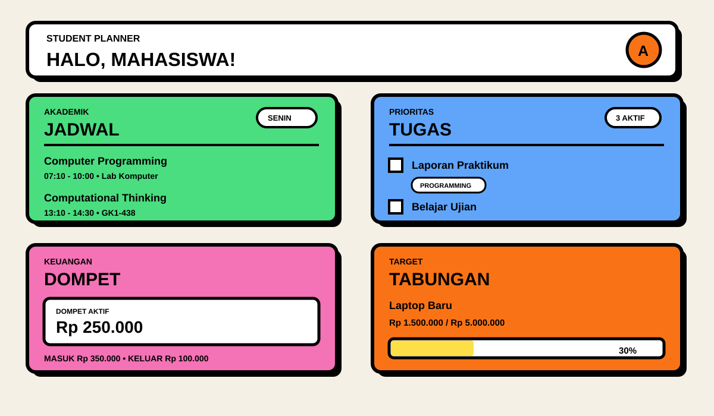

FULL-STACK WEB APP
Student Planner
Aplikasi full-stack untuk membantu mahasiswa mengelola jadwal, tugas, keuangan, tabungan, dan profil dengan data cloud yang tersinkron antar perangkat.

Tentang Project
Student Planner adalah aplikasi full-stack yang saya bangun untuk menyatukan kebutuhan akademik dan pengelolaan pribadi mahasiswa dalam satu dashboard. Supabase digunakan untuk authentication, database PostgreSQL, realtime sync, dan penyimpanan foto sehingga akun yang sama dapat digunakan dari laptop maupun smartphone.
Fitur Utama
Tech Stack
Yang Saya Pelajari
Project ini memperkuat pemahaman saya tentang pengembangan full-stack: merancang database PostgreSQL, authentication, Row Level Security, operasi data yang konsisten, realtime synchronization, file storage, serta workflow GitHub dan deployment melalui Vercel.